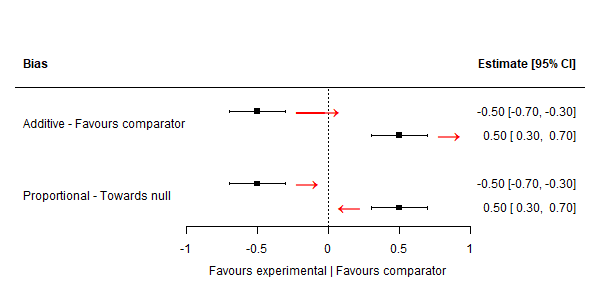

The goal of triangulate is to create a generalised version of the bias-adjusted meta-analysis approach originally proposed by Turner et al.
⚠️ WARNING NOTES
WARNING #1: This package is under development, and as such the API is subject to change at any point without warning.
WARNING #2: The approach described requires work in the preparation of data to work with the package. Please be sure to read the documentation and make use of helper functions to check whether your data is set-up right.
WARNING #3: The approach described requires careful choice of valid prior distributions of bias/indirectness.
Example
Datasets
The approach described
# Load libraries
library(magrittr)
#> Warning: package 'magrittr' was built under R version 3.6.3
library(triangulate)
# See column names of dat_bias
colnames(dat_bias)
#> [1] "result_id" "study" "type" "yi" "vi" "d1j"
#> [7] "d2j" "d3j" "d4j" "d5j" "d6j" "d7j"
#> [13] "d1t" "d2t" "d3t" "d4t" "d5t" "d6t"
#> [19] "d7t" "d1d" "d2d" "d3d" "d4d" "d5d"
#> [25] "d6d" "d7d"
head(dat_bias)
#> result_id study type yi vi d1j d2j d3j d4j
#> 1 13401-2 Study 1 NRSI -0.12783337 0.12506586 High Low Moderate Low
#> 2 14632-2 Study 2 NRSI -0.19845094 0.08680919 Moderate Moderate Low Low
#> 3 14658-2 Study 3 NRSI -0.18632958 0.03361240 High High Low Low
#> 4 14665-6 Study 4 NRSI 0.19062036 0.05526578 High Moderate Low Low
#> 5 14720-1 Study 5 NRSI -0.56211892 0.05141924 High Low Low Low
#> 6 14761-1 Study 6 NRSI -0.09431068 0.06969822 High Moderate Low Low
#> d5j d6j d7j d1t d2t d3t d4t d5t d6t d7t
#> 1 Low Low Moderate Add None Prop None None None Prop
#> 2 Low Moderate Moderate Add Add None None None Add Prop
#> 3 Low Moderate Moderate Add Add None None None Add Prop
#> 4 Low Low Moderate Add Add None None None None Prop
#> 5 Moderate Low Moderate Add None None None Prop None Prop
#> 6 Moderate Low Moderate Add Add None None Prop None Prop
#> d1d d2d d3d d4d d5d
#> 1 Favours comparator None Unpredictable None None
#> 2 Favours experimental Favours comparator None None None
#> 3 Favours comparator Favours comparator None None None
#> 4 Favours comparator Unpredictable None None None
#> 5 Favours comparator None None None Unpredictable
#> 6 Favours comparator Favours comparator None None Unpredictable
#> d6d d7d
#> 1 None Away from null
#> 2 Unpredictable Away from null
#> 3 Unpredictable Away from null
#> 4 None Away from null
#> 5 None Away from null
#> 6 None Away from null
tri_dat_check(dat_bias)
#> Looks good!
#> All expected columns are present in the dataset.For details
Absolute directions of bias
The best way to think about this is to consider an example, plotted on a standard forest plot.
For additive bias/indirectness, the position of the point estimate does not effect the absolute direction of bias. That is, regardless of whether the point estimate is above or below the null, the absolute direction of bias/indirectness will be the same.
In contrast, for proportional bias/indirectness, the absolute direction of bias depends on the position of the effect estimate. For example, if the effect estimate represents a protective effect (below the null), then bias towards the null would be adjusted for by moving the effect estimate proportionally to the right. In contrast, if the effect of the intervention is harmful (effect estimate above the null), bias towards the null would be adjusted for by moving the effect estimate proportionally to the left.
Both scenarios are illustrated in the figure below:

Once we load our data, helper functions will convert it to long format and convert to absolute directions of bias/indirectness.
dat_bias <- triangulate::dat_bias %>%
# Convert to long format
tri_to_long() %>%
tri_absolute_direction() %>%
tri_append_bias(triangulate::dat_bias_values)Then apply the same approach to the indirectness dataset:
dat_ind <- triangulate::dat_ind %>%
# Convert to long format
tri_to_long() %>%
tri_absolute_direction() %>%
tri_append_indirect(triangulate::dat_ind_values)Add prior distributions of bias/indirectness
dat_bias_values
#> domain j bias_m_add bias_v_add bias_m_prop bias_v_prop
#> 1 all high 0.18 0.10 0.06 0.032
#> 2 all moderate 0.09 0.05 0.03 0.016
#> 3 all low 0.00 0.00 0.00 0.000Create final dataset and analyse
We now have two clean datasets, one for bias and one for indirectness, that we can use to
dat_final <- tri_prep_data(dat_bias, dat_ind)
#> Joining, by = "result_id"
#> Joining, by = "result_id"
#> Joining, by = "result_id"
#> Joining, by = "result_id"At this point, we have an unadjusted (yi, vi) and adjusted (yi_adj, vi_adj) estimates for each result.
These estimates can then simply be passed to metafor for analysis
model_adj <- metafor::rma.uni(
yi = yi_adj,
vi = vi_adj,
data = dat_final,
slab = dat_final$study,
)
#> Warning: Studies with NAs omitted from model fitting.
# Pass model to forest plot function
metafor::forest(
model_adj,
atransf = exp,
)